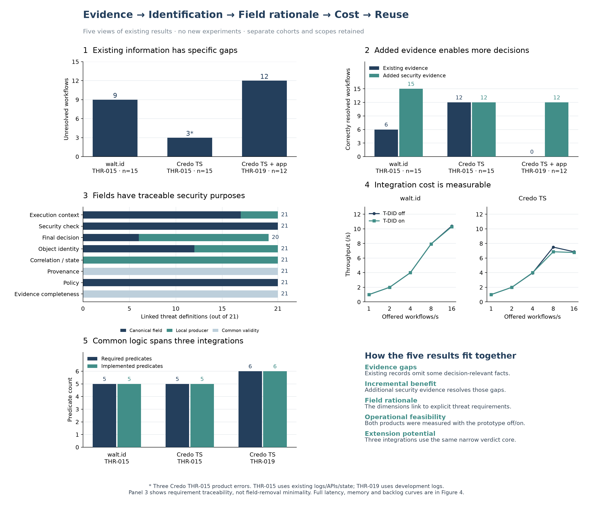
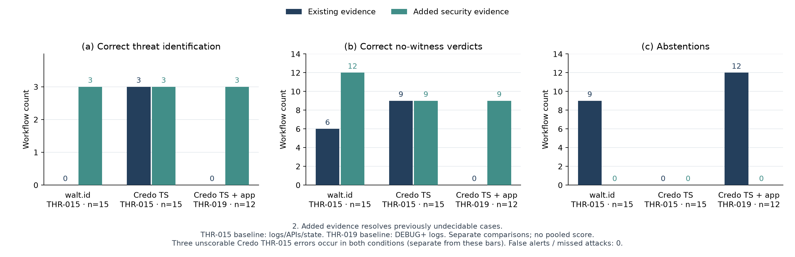
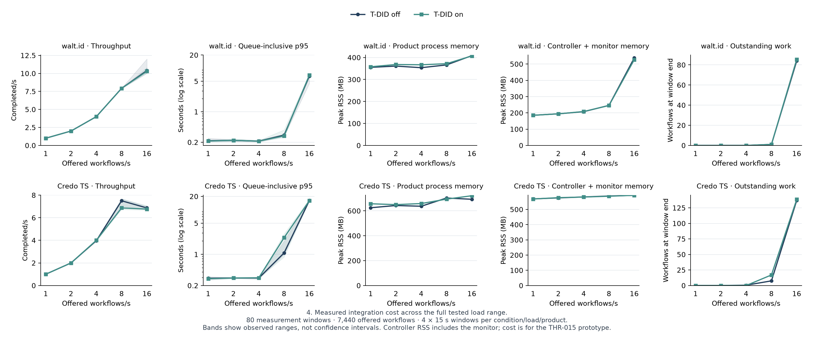
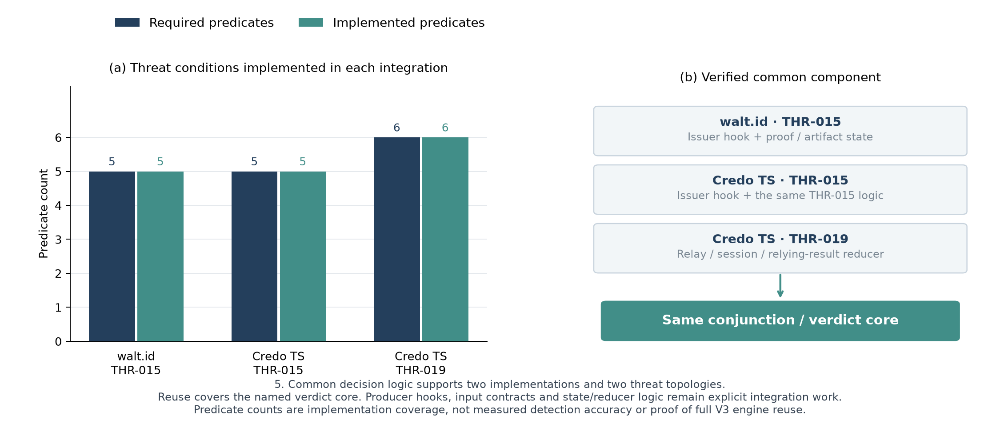

해결해야 한 문제
DID/VC 시스템은 발급이나 제시의 최종 성공만 남기고, 증명 검증·정책·객체 동일성·이전 사건과의 관계처럼 위협 판정에 필요한 사실을 서로 다른 위치와 형식으로 기록합니다. 기록이 없는데도 정상이나 공격으로 단정하면 감사 결과가 왜곡됩니다.
Research / Digital Identity
DID/VC 환경에서 수행된 보안 검사를 사후에 확인할 수 있는 위협 분류와 로그 구조를 설계합니다.
DID/VC 시스템은 발급이나 제시의 최종 성공만 남기고, 증명 검증·정책·객체 동일성·이전 사건과의 관계처럼 위협 판정에 필요한 사실을 서로 다른 위치와 형식으로 기록합니다. 기록이 없는데도 정상이나 공격으로 단정하면 감사 결과가 왜곡됩니다.
디지털 신원은 인증 성공만으로 충분하지 않습니다. 어떤 증거를 어떤 구현체가 만들었고, 정책이 실제로 적용됐으며, 승인 결과가 이후 접근과 연결됐는지를 사후에 확인할 수 있어야 신원 기반 서비스의 책임 경계를 설명할 수 있습니다.
DID/VC 위협의 성공 조건에서 필요한 런타임 증거를 역으로 도출합니다. 구현체별 기록은 공통 보안 이벤트로 바꾸고 현재와 과거 사건을 연결해 threat_witness, no_witness, incomplete_evidence, engine_error로 구분합니다.
ATT&CK, AADAPT, CAPEC, CWE의 분류 대응만으로는 런타임 관측 가능성을 알 수 없었습니다. 일반 개발 로그와 API·상태 추론, 정적 코드 분석, 추가 계측을 비교하고, 상태 없는 이진 판정과 상태·증거 인식 판정을 같은 통제 스트림에서 대조했습니다.
RawEvidence를 구현체 adapter에서 lift·enrich해 CanonicalSecurityEvent로 만들고, provenance·상관키·정책·증거 완전성을 함께 보존하는 구조를 선택했습니다. 필요한 사실이 없으면 실패나 정상으로 치환하지 않고 incomplete_evidence로 남깁니다.
21개 DID/VC 위협의 조건과 증거 요구사항을 명세하고, 15개 고정 구현체에서 해당 증거가 기본·추가 계측·파생·미가용 중 어디에 속하는지 원장으로 관리했습니다.
THR-015에서는 동일 증명 재사용의 다섯 조건, THR-019에서는 전달 주체와 결과 소비·접근 결정의 여섯 조건을 producer·상태 reducer·공통 판정 함수로 연결했습니다.
같은 보안 사실도 walt.id와 Credo TS에서 생성 위치가 달랐고, HTTP 실패나 발급 성공 같은 결과를 증명 검증 성공으로 오해할 수 있었습니다. 개발 로그의 메시지와 실제 보안 단계 증거를 구분하면서도 같은 실행에 묶는 작업이 필요했습니다.
관측값의 생산 위치와 무결성, 사건 상관관계, oracle 분리를 명시하고 판정 출력을 먼저 봉인했습니다. 제품 오류 3건도 삭제하거나 임의로 음성 처리하지 않고 정답 미확정으로 보존했습니다.
walt.id THR-015에서 기존 정보로 보류였던 9/15건은 보안 증거 추가 후 15/15 올바른 판정으로 바뀌었습니다. Credo TS는 기존 정보와 제안 조건 모두 확정 가능한 12/15건이 같았고 나머지 3건은 제품 오류로 보존했습니다.
Credo TS와 연구용 앱의 THR-019 비교에서는 일반 개발 로그의 12/12 보류가 추가 보안 증거에서 공격 3건과 비양성 9건의 올바른 판정으로 바뀌었습니다. 비용은 두 제품, 80개 15초 구간, 7,440개 작업에서 측정했으며 16/s 부하의 처리량은 walt.id 10.400→10.300/s, Credo TS 6.867→6.767/s였습니다.
두 구현체·두 위협·세 통합에서 좁은 증거 수집과 공통 판정 경로의 가능성은 확인했습니다. 21개 위협과 15개 구현체 전체의 동적 성능이나 배포 환경의 범용성을 검증한 결과는 아닙니다.
위협 목록을 만드는 데서 끝내지 않고, 위협 판정에 필요한 사실·생산자·공통 이벤트 필드·상태·판정 결과를 추적 가능한 원장으로 연결했습니다. 모르는 값을 숨기지 않는 판정 경계와 실제 적용 비용도 함께 측정했습니다.
공통 스키마보다 먼저 합의해야 할 것은 ‘무엇이 확인돼야 위협이 성립하는가’였습니다. 기존 로그가 충분한 제품에서는 새 계측이 판정을 개선하지 않을 수 있다는 결과도 프레임워크의 적용 기준에 포함해야 했습니다.
동적 실험은 THR-015와 THR-019의 통제 사례에 한정됩니다. 단일 사용 정책은 실험 조건이며 제품 기본 정책이 아니고, 21×15 표는 소스 기반 증거 인벤토리이지 315개 동적 공격 실험이 아닙니다.
위협별 producer와 상태 모델의 적용 범위를 늘리고, 별도 구현체와 실제 서비스 경계에서 증거 계약·판정 재사용·운영 비용을 재검증해야 합니다.
고객·임직원·에이전트의 디지털 신원을 활용할 때 인증 성공만이 아니라 검증 절차, 적용 정책, 승인 주체와 최종 접근 결과를 감사 가능한 사건으로 남기는 통제 모델입니다. 금융 서비스 적용 가능성을 설명할 수 있지만 현재 결과는 통제된 DID/VC 실험 범위입니다.



